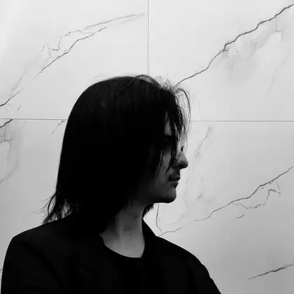

fox-API
A small Node.js and Express API with JSON endpoints for creator information and a randomly selected text face. A personal project exploring HTTP routes and file-based data.
- Node.js
- Express
- JSON API
Portfolio / F404X
Computer Science student & IT assistant
I build automation tools and explore how software, networks, and security fit together.

01 / Selected work
A small Node.js and Express API with JSON endpoints for creator information and a randomly selected text face. A personal project exploring HTTP routes and file-based data.
A browser clock with analog hands and a digital time display. Built with HTML, CSS, and JavaScript, using Canvas to draw the clock numbers and CSS transforms to update the hands.
02 / Background
I’m Enzo, also known as F404X. I study Computer Science and work as an assistant in a Brazilian registry office, where my role also includes IT support.
Automation is the area I’m most drawn to. Outside work, I use personal projects to learn about Linux, DNS, and information security. One example is my Raspberry Pi setup with Pi-hole and Unbound, where I experimented with DNS filtering and recursive resolution.
03 / Technologies
Tools and technologies I’ve used or explored in personal projects.
04 / Contact
For project ideas, collaboration, or a conversation about technology.